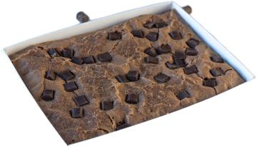
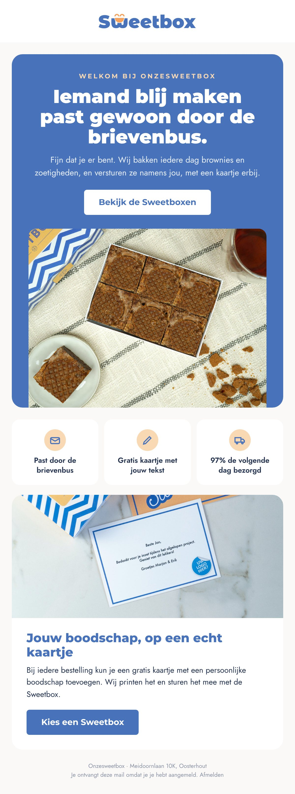
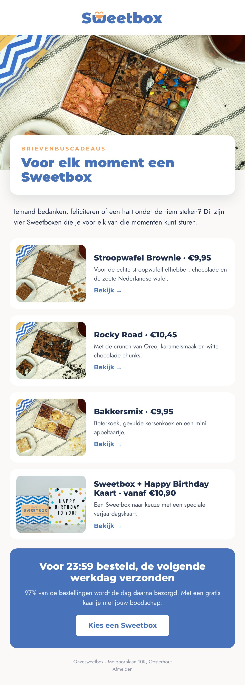

Voorbeelden voor Onzesweetbox
Vijf redenen voor een brownie door de brievenbus.
Vijf advertenties en twee nieuwsbrieven, gemaakt met jullie eigen foto's en productinformatie. Een idee van Issey Kooijmans van Digital Essence; niets hiervan is gepubliceerd.
Hoi team Onzesweetbox, jullie Sweetbox is speciaal gemaakt om door de brievenbus te passen, zodat iemand niet eens thuis hoeft te zijn. Dat vond ik een sterk idee. Met jullie eigen foto's heb ik vijf advertenties en twee nieuwsbrieven gemaakt. Niets is gepubliceerd. Past het niet, zeg het gerust.
Eerst even uitgelegd
Wat is een invalshoek?
Een invalshoek is de reden waarom iemand iets koopt. Dezelfde Sweetbox kun je op heel veel manieren verkopen, omdat niet iedereen om dezelfde reden koopt.
Dezelfde Sweetbox, vijf verschillende redenen om hem te sturen. Elke reden wordt een eigen advertentie.

- 01Zoekvraag → antwoord"Wat kan ik sturen dat gewoon door de brievenbus past?"
- 02Seizoen/cadeau"Wat stuur ik dit jaar voor Sinterklaas?"
- 03Transparantie"Is dit echt lekker, of gewoon een fabrieksbrownie in een doosje?"
- 04Probleem → oplossing"Wat als diegene niet thuis is als het pakketje komt?"
- 05Zekerheid"Komt het wel op tijd aan?"
We testen die invalshoeken naast elkaar. Na een paar dagen zie je welke het meest verkoopt. Daar maken we er meer van, en wat niet werkt, gaat eruit.
Zo werk ik
Van eerste blik tot bestelling.
Niet iedereen die een advertentie ziet, is meteen klaar om te kopen. Daarom maak ik voor elke stap andere advertenties. Zo spreek je iedereen aan op het moment waar hij of zij zit.
- Stap 1 · Top of funnel
Kennismaken
Mensen die Onzesweetbox nog nooit hebben gezien.
Doel: dat ze stoppen met scrollen en nieuwsgierig worden.
Zoals een etalage: je loopt langs en kijkt even naar binnen.
- Stap 2 · Middle of funnel
Overtuigen
Mensen die jullie al eens zagen, maar nog twijfelen.
Doel: hun vragen beantwoorden. Wat is het, waarom dit en niet iets anders?
Zoals een verkoper die rustig uitlegt wat het verschil is.
- Stap 3 · Bottom of funnel
Kopen
Mensen die bijna willen bestellen.
Doel: het laatste duwtje, zoals een aanbod, reviews of de zekerheid van gratis retour.
Zoals de kassa: duidelijk, makkelijk en zonder risico.
Wat ik zag: in de advertentiebibliotheek van Meta vond ik geen advertenties van Onzesweetbox. The Brownie Box heeft er nu meer dan 20 live, Oma's Brievenbustaart meer dan 10. Mensen die een cadeau door de brievenbus zoeken, zien nu dus vooral die merken. Terwijl jullie alles hebben om op te vallen: eigen recepten, een gratis kaartje, 97% de volgende dag bezorgd en nu de Kruidnoten Brownie voor Sinterklaas.
Advertenties · 9:16
Vijf advertenties, verdeeld over de stappen.
Tik op een advertentie om hem groot te bekijken.
Voor mensen die Onzesweetbox nog niet kennen.
Voor mensen die jullie kennen, maar nog twijfelen.
Voor wie bijna bestelt.
Waarom advertenties
Zo groeien foodmerken op Instagram.
De meeste mensen ontdekken een nieuw merk niet via Google, maar tijdens het scrollen op Instagram. Brievenbuscadeaus zoals The Brownie Box en Oma's Brievenbustaart draaien daar nu tientallen advertenties tegelijk, zeker rond Sinterklaas en de feestdagen. Een vaste set werkt het best: een advertentie die nieuwsgierig maakt, een die twijfels wegneemt en een die de koop makkelijk maakt. Een welkomstmail zorgt dat iemand die nu nog niet bestelt, jullie bij het volgende cadeaumoment weer weet te vinden.
Aantal advertenties: Meta Advertentiebibliotheek, 24-11-2026.
Nieuwsbrief 1 van 2 · Welkomstmail
Iemand blij maken past gewoon door de brievenbus.
Op de site zag ik nog geen aanmeldformulier. Deze welkomstmail is het eerste dat een nieuwe aanmelder krijgt: wie jullie zijn, waarom de Sweetbox door de brievenbus past en dat er een gratis kaartje bij kan.
- Begint met het idee achter de Sweetbox
- Drie redenen in één oogopslag
- Het gratis kaartje als tweede reden om te bestellen

Nieuwsbrief 2 van 2 · Cadeaugids
Voor elk moment een Sweetbox
Een mail met vier Sweetboxen voor bedanken, feliciteren of een hart onder de riem. Zo'n gids werkt goed voor mensen die al eens besteld hebben en bij het volgende moment weer een cadeau zoeken.
- Vier Sweetboxen met prijs en één zin
- Voor elk cadeaumoment iets
- Afsluiting met bezorging en het gratis kaartje

Ritme
Zo kan een week eruitzien.
Dit is een voorbeeld, geen vast pakket. De kracht zit in het ritme: regelmatig nieuwe invalshoeken testen in elke stap, en je nieuwsbrief vast versturen. Wat werkt, doen we vaker.
- MaNieuwe advertenties liveNieuwe invalshoeken in elke stap tegelijk testen.
- DiMeekijkenWelke invalshoek pakt de doelgroep op?
- WoBijsturenBudget naar wat werkt, de rest eruit.
- DoNieuwsbrief verstuurdVast moment, zodat lezers erop gaan rekenen.
- VrKorte updateWat werkte en wat we volgende week doen.
Benieuwd hoe dit voor Onzesweetbox werkt?
Een kwartiertje bellen is genoeg om te kijken of het past. Geen verplichtingen.